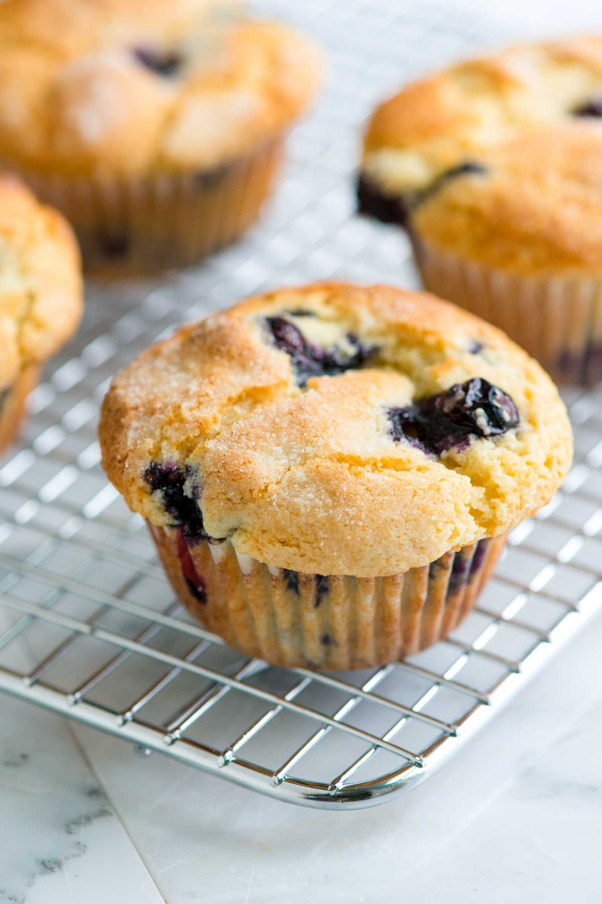

Muffin
Deze muffin is perfect als nagerecht.
ingrediënten
- 300 gram boter
- 500 gram meel
- 2 eieren
- 100 gram cacao
- 100 gram blauwe bessen
Bereidingswijze
- Warm de oven voor op 175 graden Celsius.
- Smelt de boter en mix het met het meel.
- voeg de eieren, blauwe bessen en cacao toe en blijf het beslag mixen.
- Druk het mengsel in een muffinvormen en bak deze ongeveer 25 minuten in de oven.
- Haal de vorm uit de oven. Laat even afkoelen en haal het daarna uit de vorm.

Tip. Lekker met chocolade melk!